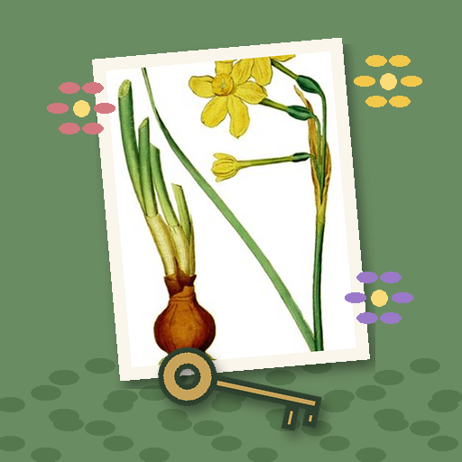

<- all projects

Garden Secrets
PC
Volume
Live
Thirty years of weeds. One grandmother's journal.
Nell inherits her grandmother's walled garden at Hollowmere, untouched for thirty years. Under the brambles are paths, beds, a fountain and a locked summer house, and Grandma's journal says the garden is a map. Pull the weeds to find the plants from her botanical plates, plant beds to match her patterns and turn channel stones to bring water from the rain butt. Ten areas and forty journal pages restore memories, from a boy evacuated from London in 1940 to the keepsake Grandma left for Nell, illustrated with real plates from Curtis's Botanical Magazine.